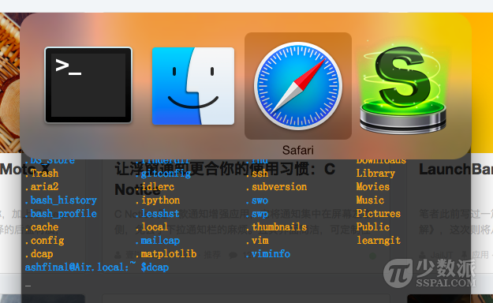

一行命令搞定 App Switcher 窗口截图
软件说明
自制截图小工具 dcap ! 功能简单，没啥技术含量 =_= 其实是对系统内置命令的简单封装，真的只有 6 行代码呀～ 除基本截图功能外，增加了对 App Switcher (按 Command + Tab 出来的东东)以及任何软件菜单的截图支持。
适用于写科技类博客、即时聊天等演示需求多的场合，适合记不住 Command + Shift + 4 等快捷键的同学，适合截图后大多时候想继续编辑的同学，适合每次粘贴完都要再去桌面删除文件的同学……
现在 dcap 使用频率还是蛮高的。甚至我还给它制作了一个图标，然后把它扔到 Applications 目录，通过 Spotlight 搜索启动。功能其实没啥可说的，3 秒钟内摆好姿势等待光标变成十字然后拍照，自动调用 Preview 进行编辑。若不想生成文件不想编辑，就拍照过程中按住 control 键强制输出到剪贴板。其它系统自带的截图功能它都有，比如按空格键切换窗口模式和框选模式，按 shift、option 等键锁定高宽长度不变……等等。
原文最早发布于少数派社区。因第一次尝试 bash 脚本比较激动，文章写的比较啰嗦。现重新整理下，以作记录。对dcap制作过程感兴趣的同学，可以继续阅读以下全文。嫌麻烦的直接下载下面的链接就可以了～
现已更新至此, dcap下载链接：百度网盘下载
以下为啰嗦的折腾过程：
缘起
之前看到少数派上你不知道的 10 个 OS X 技巧这篇文章，其中 Tip 10 提到截取 App Switcher 窗口的方法。
但看上去就觉得好麻烦啊，而且完全没搞明白为啥需要支持 SSH 的 iOS 客户端（这意味着需要 iPhone/iPad 配合额外安装应用并开启相关设置，我就截个图啊至于么-_-#）。但该文章给了最重要的提示，原来 kill 还可以这么用！整个思路是这样的：将 App Switcher 相关进程暂停在那里等待你截图！那我们能不能直接在本机 Terminal 中输入 kill 命令让其暂停呢？经实际试验后得知快捷键调用 App Switcher 之后，完全没法在 Terminal 中进行任何操作啊 :( 这就是原文作者为啥蛋疼地引入SSH客户端的缘由了。那我们能不能在使用 App Switcher 的同时定时执行 kill -stop 命令呢？理论上应该可以。OK，那就开始干吧！
探索
说起来容易，做起来难。对于一个刚接触 macOS 半年多的小白来说，根本不知道咋着手啊……嗯，听说 Automator 机器人好像很厉害？那就打开看看吧。可是打开 Actions Library 翻来翻去，好像就只有 Run Shell Script、Set Value of Variable 等貌似与我们有关联，可折腾来折腾去始终不得要领。摔啊！(T ^ T) 算了，反正都是通过 Terminal 命令执行，干脆直接试试写 shell 脚本吧。说起来神秘的 shell 脚本不过也就是命令的集合罢了。
OK，一步一步来。ps aux | grep Dock获取进程ID，这命令早知道了。眼睛一瞅，嗯，进程 ID 看到了哇。但我们要自动化，自动化！好伐？！要从那一大坨输出文字中把 Dock ID 抓出来，想起来都头大。好在以前听高手说过 sed、awk 是神器。好吧，放狗搜索。…… 中间种种心酸就不一一说了，网络上各种鱼龙混杂，泥沙俱下，大家都懂得。好不容易找到几篇靠谱的文章，不能跳着看啊。挨个把人家示例命令敲一遍吧，看看是不是自己想要的。中间还顺道把正则、变量、条件、循环等等都看了下，然后组合－测试、组合－测试……Again and again. 终于！我们可以稳定得出自己想要的结果了！哦耶！
接着试下，定时执行 kill -stop 命令。App Switcher 果然成功冻结，没问题！接下来就简单多了，我们已经知道有 screencapture 这个命令，执行 screencapture -help 看看有什么参数能让截图更智能吧。所有步骤测试无误后，把相关命令组装起来。最后结果令自己都大感吃惊，整个 shell 脚本只有短短的 6 行而已！真的按量计算的话，这投入产出比也太……不禁令人感慨啊 -_-#
不管怎么样，脚本总算是运行起来喽。最终内容如下：
[[ -d .dcap ]] || mkdir .dcap sleep 3 Dockpid=$(ps aux | grep MacOS/Dock | sort -k 2 | sed -e '2,$d' | awk '{print $2}') kill -stop $Dockpid screencapture -iP .dcap/DockCapt.png kill -cont $Dockpid
我们开始时的设想也终于实现了。接下来可以让它更简单些，这个东东我们以前也搞过类似的。
mv dockcapt.sh .dockcapt vim .bash_profile
在该文件里面添加一行：
alias dcap="sh ~/.dockcapt"
:wq 打完收工！
source .bash_profile
这样我们就将所有东东组装为一个命令：dcap。并隐藏了繁琐的文件以及一些操作细节。
测试一下，Terminal中直接执行 dcap 看看，已经支持 tab 补全了。
附App Switcher截图一张：

总计
OK，我们还是再总结(luosuo)下建立命令和使用方法好了：
建立命令：
-
Terminal 输入 vim .dockcapt
-
复制上文脚本内容粘贴并:wq保存
-
vim .bash_profile
-
粘贴alias dcap='sh ~/.dockcapt'并:wq保存
-
Terminal输入 source .bash_profile 或者重启 Terminal
使用方法：
Terminal 中输入 dcap 即可
然后你有三秒钟的时间来启动 App Switcher，并调整好姿势（≧∇≦）
等待光标变为十字就可以正常对 App Switcher 进行截图了。
当然，截图过程中所有的辅助键都可以使用。比如空格键切换窗口模式和框选模式，Shift 键切换保持横/纵宽度不变。默认是截图完成后自动打开 Preview 以供编辑，当然你也可以按住 Control 键以强制输出到剪贴板。
怎么样？经过上面的设置，以前看似无比麻烦的 App Switcher 截图是不是突然变得好简单了呢？真正实现了一行命令搞定 App Switcher 窗口截图！
补充
以上设置对于 Terminal 常年开着装逼的用户(比如我=_=)来说，操作应该都不成问题。但对于大多数一看见 Terminal 窗口就六神无主的小小白来说，还是有点麻烦。接下来，我们来更进一步，以便让这篇文章被更多的小小白们看得懂并使用并传播！
那就是：祭出之前提到的 Automator 机器人，将我们的脚本打包成 app 形式的应用。直接双击就可以使用，小小白们再也没有任何借口和理由了！
打开 Automator，新建 Application：
拖进两个Actions：
Ask for Confirmation 和 Run Shell Script
具体内容设置直接看图，就不啰嗦了：
保存，完毕！
这样我们就可以直接双击运行了，效果如图：
到这里，我们一不小心就“写”了一个Mac OS X截图小应用。该应用可直接双击运行，可以到处拷贝传播。
对于记不住 Command + Shift + 4 这类快捷键的用户来说绝对福音，就不多说了。而且截图之后可以自动调用 Preview 进行编辑，而且它比系统自带的截图功能更强大，可以截取 App Switcher 窗口呢！还可以通过 Spotlight 搜索直接启动呢……想想还有些小激动哩！(此处已经精神错乱，语无伦次了啊！ 囧rz)
后记
此文章是对 App Switcher 窗口截图方法的补充和探讨，笔者接触 macOS 系统时间也不长。可能某些地方理解有误，或者有更好的截图方法，都烦请指出。
最后感谢原文你不知道的 10 个 OS X 技巧提供的思路和启迪，也欢迎大家更多的使用技巧交流。
可能有些人喜欢打包好的 dcap 多一些，所以我再优化下好饿
更改启动时(有点讨厌的)弹窗为 Notification 方式，可能会有更多人使用？(^.^)链接： http://pan.baidu.com/s/1bEpOi
已默认禁用所有提示，并更换应用图标。如需了解更多，可直接用 Automator 打开 app 包以编辑或留言联系作者
文章链接：https://macplay.github.io/posts/yi-xing-ming-ling-gao-ding-app-switcher-chuang-kou-jie-tu/
发布/更新于：
版权声明：如无特别说明，本站文章均遵循 CC BY-NC-SA 4.0 协议，转载请注明作者及出处。